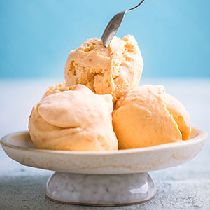
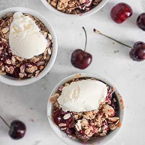

<!DOCTYPE html>
<html lang="en">
  <head>
    <meta charset="utf-8">
    <title>Old-Style Vanilla Ice Cream Recipe</title>
    <!--<link href="css/vanilla.css" type="text/css" rel="stylesheet"> -- >
    <link href="css/print.css" media="print" rel="stylesheet" />
  </head>

  <body>
      <header>
        <h1>Old-Style Vanilla Ice Cream</h1>
      </header>

      <main>
        <section>
          <figure>
            
            <figcaption>Photo by Dovile Ramoskaite on <a href="https://unsplash.com/photos/iT4qcNMhYTQ">Unsplash.</a></figcaption>
          </figure>
          <figure>
            <figcaption>Photo by Alexandra Golovac on <a href="https://unsplash.com/photos/-y5khBQayMU">Unsplash.</a>
            </figcaption>
          </figure>
        </section>

        <section>
          <h2>Initial Information</h2>
            <article>
            <p>Prep Time: 20 minutes</p>
            <p>Cook Time: 20 minutes</p>
            <p>Yields: 2 servings</p>

            <h2>Ingredients</h2>
              <ul>
                <li>1 1/2 cup milk</li>
                <li>3/4 cup sugar</li>
                <li>1/8 teaspoon salt</li>
                <li>1 tablespoon vanilla</li>
                <li>3 beaten egg yolks</li>
                <li>1 pint heavy cream</li>
              </ul>

              <h2>Directions</h2>
                <ol>
                  <li>Warm the milk over low heat</li>
                  <li>Add and stir until dissolved the sugar and salt</li>
                  <li>Slowly pour over the beaten egg yolks and beat well until blended</li>
                  <li>Cook in double boiler until thick and smooth</li>
                  <li>DO NOT BOIL</li>
                  <li>Chill and add vanilla</li>
                  <li>Whip the cream and fold into custard</li>
                  <li>Fill the ice cream container 3/4 full, put in dasher and pack freezer with ice and salt, using 5 parts ice to 1 part coarse ice cream salt</li>
                </ol>

              <h2>Other Information</h2>
              <ul>
                <li>Author: Organization.Coon Prairie Church</li>
                <li>Source: Country Coon Prairie Church Preservation Kokk Bok (1986-01-01)</li>
                <li>Category: Dessert</li>
                <li>Measure: Avoirdupois</li>
                <li>Ingredientds: Milk, sugar, salt, vanilla, egg, heavy cream</li>
                <li>Equipment: Pot, double boiler, freezer</li>
                <li><a href="https://publicdomainrecipes.org/recipes/real-old-fashioned-vanilla-ice-cream/">Original recipe</a>.</li>
              </ul>
            </article>
          </section>
        </main>
      </body>
    </html>
